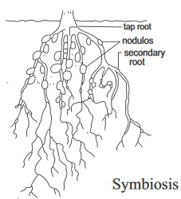
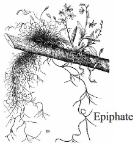
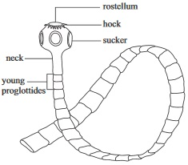

New Senior School Biology Practical Activity & Work Book Two
Chapter
7
ECOLOGICAL MANAGEMENT
Notable Concepts
Ecological studies
Association
Tolerance
Adaptations
Pollution
Conservation of
Symbiosis
fig7.1:

Commensalism
fig7.2:

Tapeworm (a parasite)
fig7.3:

Background Information
Association
Ecological studies inform us that living things do not live in isolation. In ecological system, living organisms interact with one another mainly through food relationships. Very often, this interaction leads to competition.
In an ecosystem, organisms are subjected to both favourable and unfavourable ecological factors. Some species of organisms try to survive and cope with environmental condition by forming close relationships or association with other species.
Some of these associations are beneficial to one species and harmful to the other (parasitism) while some are beneficial to both species (symbiosis or mutualism) but some of the associations are beneficial to one species but neither harmful nor beneficial to the other (comensalism).
Type of association
The manner of the association
Examples of such association
1. Symbiosis
Both organisms benefit
(i) Nitrogen fixing bacteria in root module of leguminous plants. (ii) Algae and fungi in lichens. (iii) Herbivores and bacteria in their anus and large intestines. (iv) Termites and protozoa in their alimentary canals
2. Parasitism
The parasite benefits from the other species while the host suffers harms.
(i) Human’s tapeworm and roundworm. (ii) Tick in cattle. (iii) Fungi
3. Commensalism
One organism which is the commensal benefits while the host is not affected favourably or adversely.
Epiphites
Tolerance
Organisms in their habitats are usually confronted with prevailing factors among which some are favourable while some are adverse. organisms can either die, or leave the habitat or develop tolerance. Toleranceis the organisms ability to withstand or cope with all or some sorts of unfavourable environmental factors in the habitat.
For every organism, there is a minimum and a maximum limit of a factor it can tolerate. The minimum limit is the lowest possible limit at which an organism can have tolerance over changes in an environmental factor. The maximum limit is the upper limit.
Geographic Range and Adaptation
Organisms due to some ecological needs can dwell successfully in certain geographic zones or area. The area or location in the biosphere in which a population of organisms can naturally dwell successfully as a result of their adaptation to the prevailing environmental factors there is called geographic range.
Plants and animals adaptations
Organisms
conditions
Animals adaptive features
Fish and Tad pole
aquatic, movement and Respiratory
fins, streamline bodies, gills
Amoeba and Paramecium
aquatic and osmoregulatory
contractile vacuole
Birds
flight and feeding
hollow bones, feathers, streamline bodiesStrong and hooked claws.
Insects
regulating water loss
exoskeleton, tracheal system and Malpighian Tubules
Plant Adaptation to Water Availability
Names of plants
Examples
Adaptation features
1
Hydrophytes: plants that live in fresh water which has all or part of their bodies in water.
Water lily, water hyacinth.
Large well developed air spaces covering of thick cuticle on the exposed floating parts.
2
Mesophytes: land plant that are found in an adaquate water supply.
Hybiscus, Cassava
Waxy cuticle cover their body to minimise water loss, presence of stomata on leaves for geseous exchange
3
Xerophytes: plants that survive a water scarce environment such as a desert.
Cacti, euphorbia, aloe
Well developed root system, swoolen stems or leaves (succulents) containing water storage cells. Reduced surface area of leaves, absence of leaf blade and covery of leaves by tick waxy cuticle inorder to reduce water loss from leaves.Ability of the protoplasms to withstand
Pollution
Introduction of materials or energy to the environment which defiles and make it uncondusive for life is called pollution. It is an undesirable change in the environment.Pollution can be:-·
Air pollutionwhich is due mainly to the burning of fossil fuels, release of chlorofluoro carbons, noise and radiactive fall outs
Water pollution which is caused by domestic refuse and sewage, industrial and agricultural waste, crude oil (petroleum) and heat.
Soil pollution which is caused by soil erosion due to agricultural practices, mining activities, and deforestation.
Types of pollution
Pollutant
Cartilagenous fish
Air pollution
i. pollution from burning fuel e.g oxides of carbon sulphur ivoxide oxides of nitrogen.
ii. Chlorofluorocarbons.
iii. Noise.
v. Radiation
i.blood disease in man, respiratory problem, dizziness, heasache brain damage.
ii.Depletion of ozone layer which can lead to skin cancer and wrinkle, cataract sunburn and lower resistance to infection diseases.
iii. High blood pressure, parmanent deafness mental illness.
iv. Cancer, genetic muttions, lukemia.
Soil pollution
Erosion garbage, fertilizers and pesticides.
Constitutes a breading places for pests andvectors of diseases.
Water pollution
Refuse and sewages, industrial wasteAgricultural wastes and crude oil etc.
Infectious diseases, mercury, poisoning, devastation of the ecosystem etc.
Conservation of Natural Resources
Air , water, soil, wildlife, forests, fossil fuel, and minerals are among the important natural resources of the earth. Among all these, only fossil fuels and minerals are non renewable. As human activities distort the delicate balance of the ecosystem, it is necessary to conserve natural resources in order to maintain a healthy functional biosphere that will meet human needs and also restrain a harmful imbalance in the ecosystem.
Conservation can be indirectly carried out by population control and pollution reduction and directly by use of naturalresources, reducing wastage and recycling. For the future of life on earth, there is need for conservation of landscape and wild life.
This will prevent the extinction of species.
General Questions
Fill in the correct type of association of living things that is exhibited by organisms in each column.
Organisms in relationship
Type of association
1
Herbivores and bacteria in their rumens and large intestine
2
Alga and fungus in lichens
3
Tapeworm in the intestine of man
4
Man and intestinal bacterial
5
Cassytha growing in another plant
6
Remora and shark
7.Define tolerance
8. Plants of dry areas where either rainfall is very low or water present is in frozen forms and thus not available to the plant are called:
9. What plants do you call mesophytes
Plants in dry area
Plants in water loggedd area
Plants that are found in adequate water supply enivironment
10. Write two adaptations of plants to shade
(i) Thick bark (ii) Low chlorophyl content
(i) Thinner leaves with large surface area (ii) Relatively high chlorophyl content
(i) Sharpy spine thorny leaves (ii) Tall stems
11. State one harmful effect of polluting the environment with carbon dioxide
Green house effect
Noise pollution
Acid rain
12. Write three common water pollutions
13. A thinning ozone layer can occur due to the environmental pollution by
14. _________ and ___________ can be caused by noise pollution.
Lead poisoning and cough
Green house effect andheart failure
Loss of hearing and insomia
15.Write three examples of non renewable resources
(i) wind (ii) water (iii) biomas
(i) crude oil (ii) coal (iii) natural gsa
(i) Solar (ii) hydro energy (iii) water
Expression Exercise
1a. Write three effects of noise pollution.
1b. List three natural resource than need to be conserved.
2a. Write the harmful effects of the following pollutants.
Crude oil
Lead compounds
Dust
Fertilizer
2b. Write four methods of conserving soil.
3a. Give three reasons why conservation a necessary
3b. What is?
Tolerance
Geographic range
Adaptation
Practical Activities
Observe the features of each of the organisms listed below:
Tilapia fish
Tad pole
Pigeon
Weaver bird
(a) Then based on your observation fill in the answer to the questions within the table below.
Names of organisms
Habitat
Shape
Locomotive Organ
Organ of Ventilation
i
Tilapia fish
Water
Stream lined
Fins
Gills
ii
Tad pole
Water
Stream lined
Limbs and tail
Gills
iii
Pigeon
Trees/ceiling
Stream lined
Wings and legs
Gills
iv
Weaver bird
Trees
Stream lined
Wings and legs
Gills
1b Write your observations based on :close relationship between the adaptations of the organisms and their
i. Shapes
ii.Habitats
2. Observe the features of each of these plants.
Water weed (Elodea)
Crotolaria plant
Water lily
Talinum triangulare
Bryophyllum plant.
Particularly observe: the root system of the plants by cutting the roots using razor blade, also by cutting open each stem using razor blade,carefully observe the leaves, positions of the stomata, leaf cuticle using hand lens.
(a)Based on your observations complete the table below; fill in the answer according to your observations about any of the plants.
Features
Water weed (Elodea)
Crotolaris plant
Waterlily
Talinium triagulare
Bryophyllum
1. Root system: fibrousor taproot? reduced orextensive? air spacespresent or not?
2. Stem: well developedor not? woody orsuculent? air spacespresent or not?
3. Leaves: large or small?thick or thin cuticle?stomata position etc
4. Habitat: where the plantgrows naturally?
b)
Which of the plants is xeropyte
Which of the plants can you call a hydrophyte
3. To show the limits of tolerance of tilapia to salinity
Apparatus and materials required : three containers or vessels containing salt solution of different concentrations, paper tape for labeling, three tilapia fish, a clock.
Procedure :
Label the vessels: 2g salt, 10g salt and 25g salt solutions respectively.
In each vessel put the marked mass of salt in gramme and 100cm of water.
Put each tilapia fish in each vessel
Carefully observe each fish in each vessel.
Answer these questions based on your observations.
Which of the solutions contains the fish that died first
Record the time it took the fish in each container to die.
Containers
Time in seconds or minutes it took the fish to die
2g/100cm
10g/100cm
25/100cm
Did all the fishes die ?
Explain your observations and answers in line with Tolerance, minimum and maximum limits of tolerance
4. Take a visit to an industrial Estate or a factory near your school or where you live (The teacher can schedule and arrange an excursion for this purpose). On your trip, make sure you carefully observe what you see, smell, and hear and also ask the relevant questions.
What industrial wastes does the factory produce?
How does the factory dispose the waste?
What gas pollutant(s) come from the factory?
5. Group class activities
Let the class divide into five groups and let each group write on any of the following topics.
The effects of tree planting and indiscriminate logging on conservation of natural resources.
The effects of over grazing in the conservation of natural resources.
Soil conservation practice and its effect on food conservation.
Forests and game reserves in Nigeria and their effects on conservation of natural resources.
Problems associated with conservation of natural resources in Nigeria.